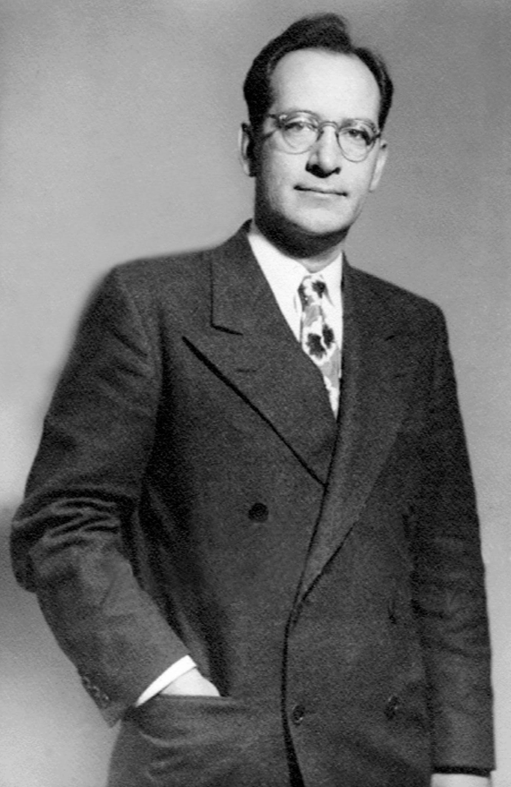

|

História da computação: 1º Geração (1944 – 1959):
Os computadores modernos da 1º geração tinham com principal característica o uso de válvulas eletrônicas, dimensões enormes, utilizavam quilômetros de fios, chegando a atingir temperaturas muito elevadas. Várias máquinas foram construídas nessa época, contudo, o ENIAC, foi o mais famosa de todas.
2º Geração (1959-1965):
Ainda com grandes dimensões, a 2º geração foi marcada pela substituição das válvulas eletrônicas por transístores. A tecnologia de circuitos impressos também foi criada, evitando que os fios e cabos elétricos ficassem espalhados por todo lugar. Nesse período começou o uso comercial
3º Geração (1965-1975):
Os computadores da terceira geração funcionavam com circuitos integrados que substituíram os transistores. Essas máquinas já possuíam menores dimensões e maiores capacidades de processamento.
Nesse período que foi criado os chips e começou a utilização de computadores pessoais.
O principal exemplo dessa geração é o IBM 360/91, lançado em 1967, sendo um grande sucesso em vendas na época.
tem menu de contexto
|